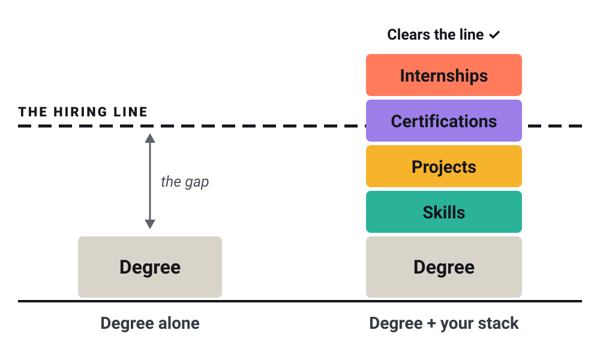

52%
of new college grads are underemployed a year after graduating: working a job that doesn’t need their degree.
Burning Glass Institute & Strada, Talent Disrupted, 2024, p. 6
Success Stack · a free guide for college students, in any major
A degree alone usually isn’t enough to get hired in your field. Build the four blocks employers look for, at the right time, with AI prompts that plan them for your major.
Why it matters
For about half of new grads, not at first.
52%
of new college grads are underemployed a year after graduating: working a job that doesn’t need their degree.
Burning Glass Institute & Strada, Talent Disrupted, 2024, p. 6
73%
of grads who start out underemployed are still underemployed ten years later.
Burning Glass Institute & Strada, Talent Disrupted, 2024, p. 6
That’s why college is your first job. What you build here sets up the next ten years.
What one internship changes
54 of every 100 grads without an internship were underemployed five years after graduating.
41 of every 100 with at least one internship.
Burning Glass Institute & Strada, Talent Disrupted, 2024, p. 24
48.5%
lower odds of being underemployed for grads with at least one internship.
Burning Glass Institute & Strada, Talent Disrupted, 2024, p. 7
#1
tie-breaker between two equal candidates: an internship with that employer (4.5 of 5) or in its industry (4.3). A high GPA: 2.9.
63.1%
of 2024–25 interns were converted to full-time hires.
7.4 s
is how long a recruiter’s first look at a resume lasts, on average.
Every number was checked against its source on 4 November 2026. What each one means, and its limits, is on the sources page.
The Stack

The hiring line is what an employer needs to see before they hire you. Your degree is the base. The blocks you build in college lift you over the line.
What you can do: the tools and know-how your field asks for.
Proof you can use them: something real you built, ran, researched or made.
A recognized credential that shows you know the basics. Some fields use licenses instead.
Work in your field before you graduate: internships, research programs, co-ops.
How a Navy lab recruiter put it
Certifications get you past HR. Projects impress the people doing the job.
One page. A recruiter’s first look lasts about 7.4 seconds, so put your best blocks at the top.
You, online: a headline, your education, your clubs, and the people you know.
Where your projects live, each with a short write-up. Not a coder? A simple portfolio site or a PDF works.
Short posts about what you’re learning and building. They show you’re growing.
If nobody can see a block, it doesn’t count yet.
Built by a student
I’m Desmond Dickey, a cybersecurity sophomore at SC State. This is what changed on my own resume once I started building blocks on purpose.
One project on my resume.
Same student, same semester. The difference: building blocks on purpose, and making them visible.
A block every semester, when employers hire, and where to look.
Four prompts that turn AI into a planner for your major.
Step by step, from a blank page to a PDF.
A headline, your education, a club, and your first connections.
Start this week
Write them on your Stack Card, and look at it again in four weeks.